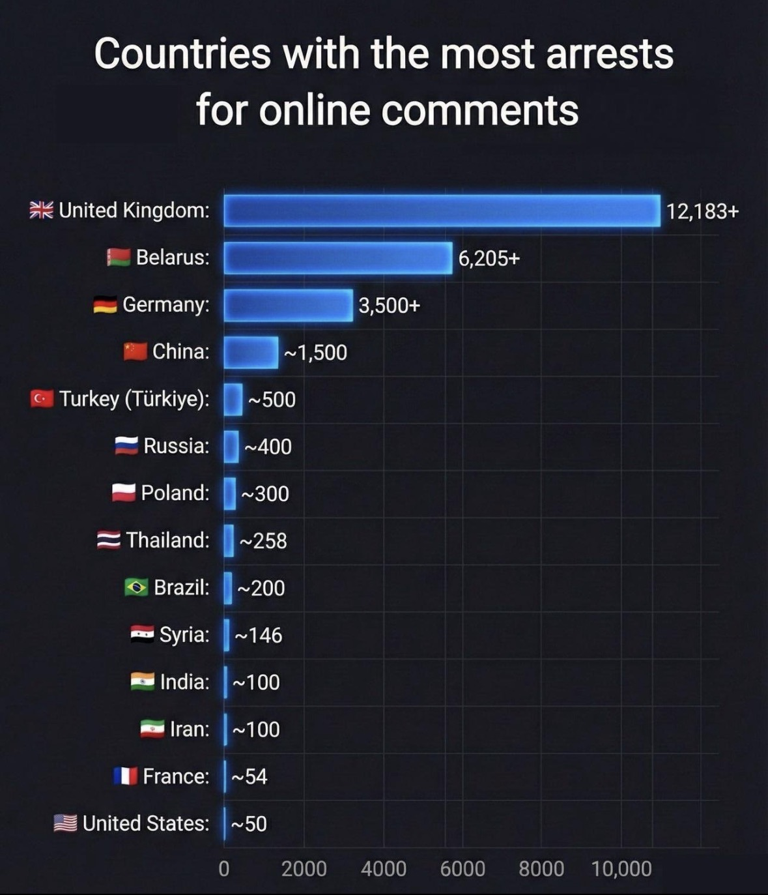

The Erosion of Internet Privacy USA, China, Russia 2026
The digital landscape in early 2026 continues to reflect a persistent global decline in internet freedom, as documented in Freedom House's Freedom on the Net 2025 report, covering conditions through mid-2025.
Of the 72 countries evaluated, 28 experienced deteriorations, with authoritarian governments leveraging AI-driven censorship and tracking, while even "free" nations like Germany, Georgia, and the United States saw setbacks. This trend is exacerbated by rising surveillance, internet disruptions, and arrests for online expression, often justified by national security or public safety.
Recent leaks, such as the November 2025 KnownSec data breach revealing China's cyber-espionage ecosystem and exports of "Great Firewall" technology, highlight the transnational spread of these tools.
Western Countries
In Western democracies, internet privacy is increasingly compromised by expanding surveillance laws and regulatory enforcement, despite protections like the EU's General Data Protection Regulation (GDPR).
The United States lacks a comprehensive federal privacy law, relying on sector-specific rules and mechanisms like the Foreign Intelligence Surveillance Act (FISA) for secret data access, with data breaches surging in 2025 exposing millions to unregulated third-party surveillance.
In the EU, enforcement under the Digital Services Act has intensified, but the "Chat Control" proposal for combating child sexual abuse material (CSAM) raised privacy alarms; by late 2025, mandatory scanning of encrypted messages was abandoned due to opposition, shifting to voluntary measures under a framework expiring in April 2026, though age verification debates continue. Proposals for wider data retention, targeting VPN providers, further threaten anonymity.
The United Kingdom exemplifies the West's trajectory toward heightened censorship via the Online Safety Act (OSA), implemented in phases since 2023, enforcing platform duties to remove illegal content and introducing offenses like cyberflashing.
Privacy advocates warn of an "unprecedented attack" on encryption, with scanning provisions stalled until technically feasible. Arrests for online speech are particularly pronounced in the UK.
Under the Communications Act 2003, police make over 30 arrests daily for "offensive" social media posts, totaling around 12,000 annually in recent years, a 121% increase since 2017.
High-profile 2025 cases include detentions during riots and comedian Graham Linehan's arrest over X posts. Leaks, such as those exposing UK government orders threatening global privacy, underscore surveillance partnerships.
China
China upholds the world's most restrictive internet environment, consistently ranked lowest in Freedom on the Net 2025. The Great Firewall employs AI for real-time censorship, blocking foreign sites and intensifying monitoring of ethnic minorities, with "alarming" regional escalations in 2025.
Henan users denied access to five times more websites than average. Amendments to the Cybersecurity Law, effective January 1, 2026, heighten penalties, emphasize AI governance, and mandate compliance for national security, including bans on "obscene" content across platforms.
All activity ties to real identities, linked to social credit systems, with biometrics and device seizures enabling total oversight. Arrests for online posts are severe. Users face imprisonment for sharing news, dissent, or "gloomy" content, with extralegal repercussions common.
Leaks in 2025, including KnownSec's exposure of contractor-driven espionage and exports of censorship tech, reveal how U.S. surveillance tools have enabled mass detention in Xinjiang, China.
Russia
Russia's "sovereign internet" initiative has accelerated digital isolation, with intensified blocking, disruptions, and surveillance since the 2022 Ukraine invasion.
In 2025, Russia recorded the highest global internet shutdowns, 37,166 hours, affecting 16.8 million people, far exceeding Iran or Venezuela, often around protests or elections. YouTube throttling began in May 2025, and new laws criminalize "searching for extremist content," with fines and VPN bans expanding control.
Arrests for online speech are rampant. Users face imprisonment for dissent, with shutdowns costing the economy $12 billion in 2025.
Leaks expose Russia's procurement of Western tech for surveillance, including the Harmony program.
Other Countries
Similar patterns emerge in Iran, Saudi Arabia, and Turkey. Iran imposed severe internet blackouts amid 2026 protests, with a 97% usage drop and over 2,200 arrests for online dissent, disrupting global connectivity.
Turkey blocked 3,300 URLs in the first seven months of 2025, detaining 24 journalists for online content, with "national security" as the top rationale.
Saudi Arabia maintains strict controls, though specifics are limited; arrests for critical posts are common, often under cybercrime laws.
These regimes use tracking tools like deep packet inspection and AI, with arrests in at least 57 countries globally for online expression.
Comparative Analysis
While differences do persist, Western countries employ legal frameworks and public-private partnerships with safeguards like GDPR, versus direct state dominance in China and Russia.
The similarities are escalating at an alarming rate. All regimes/states justify controls via pretexts like child safety in the West (e.g., UK OSA, EU Chat Control), national security in the East (e.g., China's Cybersecurity Law, Russia's sovereign internet).
Anti-encryption pushes in the UK and EU mirror China's bans and Russia's VPN restrictions. AI's role converges with predictive censorship in China, regulatory debates in the West.
Arrests for posts are unifying the West and East. Reports indicate the UK's at 12,000+ annual detentions a year for online post.
While China's extralegal punishments and Russia's fines for "extremist" searches, with Iran's blackouts enabling mass arrests.
China's regime is more advanced than Russia's emerging system, but both export models, blurring lines with Western trends.

The blurring distinctions between Western privacy erosions and authoritarian controls signal a tipping point toward universal digital oversight, driven by AI and regulatory convergence.
Without robust interventions, escalating arrests and surveillance, evident in UK's daily detentions, China's AI dominance, Russia's shutdowns, and Iran's blackouts, will further diminish global online freedoms. Policymakers must prioritize encryption and transparency to counter this trajectory.
The Societal News Team 10JAN2026